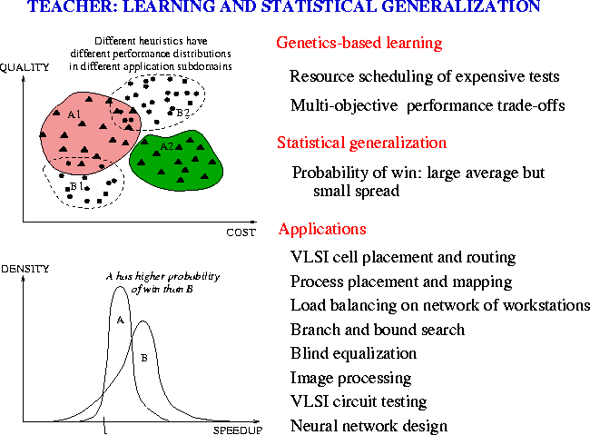

The design of good heuristics is important in many engineering applications. Today, many application problems are too complex for users to find optimal algorithms analytically. Rather, users rely on heuristics designed by experts to find high-quality solutions. The effectiveness of these heuristics, however, depends on domain knowledge available to and past experience of these experts. When little domain knowledge is available, it is important to develop automated learning methods for generating improved heuristics systematically, evaluating their performance on realistic test cases, and generalizing their performance to test cases not seen in learning. Such learning and generalization methods will carry significant impact in many engineering applications.
The objective of the Teacher (TEchniques for the Automated Creation of HEuRistics) Project is to automate the learning and generalization of performance-related heuristics for knowledge-lean application problems. To find robust and better heuristics that perform well under a wide variety of conditions, issues on performance evaluation, generalization, generalizability, and resource scheduling must be studied.

Improvements in these problem solvers are very hard because they have been tuned extensively by their designers. In each application, Teacher was able to find improvements ranging from 5% to several orders of magnitude.